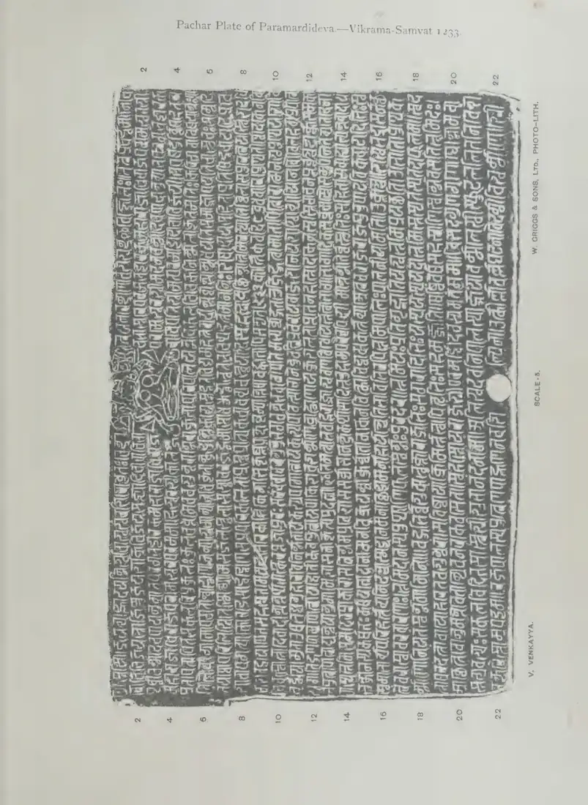

Pachar plate of Paramardidēva
PACHAR PLATE OF PARAMARDIDEVA; VIKRAMA-SAMVAT 1233.
BY ARTHUR VENIS.
The subjoined inscription is edited from two ink-impressions kindly supplied by Dr. Vogel. The historical and descriptive matter of this article is from the pen of Mr. V. Venkayya, whose unsparing courtesy I would here gratefully acknowledge. The original copper-plate on which the record is engraved is said to have been dug up some 40 or 50 years ago in Pachar, a village 12 miles north-east of Jhansi city, by one Ganeshju while excavating the foundations of his house. The exact spot is now unknown, but it was somewhere on the raised mound (consisting of the usual débris of old houses, etc.) on which the village stands. The copper-plate was in the possession of a Brāhmaṇa named Bindraban, son of Kali, one of the zamindārs of the village, and he presented it to Government.1 The plate is now preserved in the Provincial Museum at Lucknow.
The inscription consists of a single plate with a circular hole at the bottom meant for the ring to which the king's seal must have been soldered. Neither the ring nor the seal has, however, been traced so far. At the top of the plate—about the middle of the first four lines of the inscription—is engraved a goddess squatting, having four arms, with an elephant standing on each side and lifting up its trunk, apparently to pour water over her head.2 The figure is nearly the same as that found on the Banda District plate of Madanavarmadēva3 and resembles the one engraved on the first of the Ichchhāwar plates of Paramardidēva4 and the Semra plates of the same king. In the latter, however, the goddess is squatting on a lotus.5 All these figures6 are evidently representations of the goddess Gaja-Lakshmī.
1 The history of the plate and the notes on the antiquities of the villages mentioned in the inscription are taken from a memorandum received from the Collector of Jhansi.
2 In some of the other cases, where a similar figure is engraved, each of the elephants carries a water-pot in its trunk; see e.g. above, Vol. IX, Plate facing p. 173.
3 Ind. Ant. Vol. XVI, Plate facing p. 208.
4 Ibid. Vol. XXV. p. 205.
5 Above, Vol. IV, Plate facing p. 166.
6 A similar figure is cut on some of the seals of the Katak king Mahā-Bhavagupta I. (above, Vol. III. pp. 341, 345 and 346, and Vol. VIII. p. 139). The seal of the Ārang copper-plate of Mahā-Jayarāja (Dr. Fleet's Corpus Inscriptionum Indicarum, Vol. III. p. 191) and that of the Raypur plates of Mahā-Sudēvarāja (ibid. p. 196) bear a similar goddess; also the seal of the Khariār plates of the latter (above, Vol. IX. p. 171).
The preservation of the inscription is good. The characters are Nāgarī and the language Sanskrīt. As regards orthography, v is used for b throughout. The dental sibilant occurs for the palatal in sakti for śakti (l. 2), dasa for daśa (l. 8), asva for aśva (l. 17), visada° for viśada° (l. 20), and sāstra for śāstra (l. 21). The palatal sibilant takes the place of the dental in vaśundharā for vasundharā (ll. 5 and 19), Vājaśanēya for Vājasanēya (l. 11), śimā° for simā° (l. 14) and vaśudhā for vasudhā (l. 18). The anusvāra is in many cases not clearly marked. Final consonants are not distinguished, e.g. saṅvata is actually written instead of saṅvat in l. 9; phalama for phalam in l. 18; vasēta for vasēt in l. 20; and °paṭtama for paṭtam in l. 22.
The record belongs to the Chandēlla family—called Chandrātrēya1 in this (line 1) as well as in the other known inscriptions of the dynasty2. The Chandēllas were lords of Kālañjara (l. 4), i.e. Kalinjar, the well-known hill-fort situated in the Banda District, Bundelkhund, of the United Provinces. The tract of country over which they ruled was called Jējābhuktika or Jējābhukti3 (between the rivers Jumna and Narmadā), apparently after king Jējā, whom Kielhorn identified with Jayaśakti,4 one of the carliest kings of the family. About the name Jējābhukti, Dr. Hultzsch remarks: “This old name of Bundelkhand, the country which was ruled over by the Chandēllas is the original of the vernacular form Jajāhūti or Jajābōti, just as the modern Tirhut is derived from Tirabhukti.”5
Our inscription opens with a verse in praise of the Chandrātrēya family and then refers to kings Jayaśakti and Vijayaśakti of the same family. The record then registers a gift by the Paramabhatṭāraka Mahārājādhirāja Paramēśvara, the glorious Paramardidēva, an ardent worshipper of Mahēśvara, who meditated on the feet of the P. M. P. śri-Madanavarmadēva who, in his turn, meditated on the feet of the P. M. P. śri-Prithvivarmadēva. While at Vilāsapura Paramardidēva granted land in the village of Lauvā within the vishaya of Karigavā. The grant was made on Wednesday, the eighth tithi of the dark fortnight of Kārttika in Saṅvat 1233, expressed both in words and in figures. The donce was a Brāhmaṇa named Paṇdita6 Kēśavaśarman of the Kaśyapa-gōtra, who was a student of the Vājasanēya-śākhā, had the three pravaras of Kaśyapa, Avatsāra and Naidhruva and had come from the Bhatṭā-grahāra called Mutāūsha. He was the son of the Dvivēdin Tikava, grandson of Rā (?) Tihuṇapāla and great-grandson of Chau Valahavā. The document was written by Śubhānanda of the Vāstavya race7 and engraved by Pālhaṇa, son of Rajapāla, who is described as a master of the art and craft (वैदग्धोविश्वकर्मणा, l. 22).
Without entering into the history of the Chandēlla dynasty,8 it is here necessary to state that the inscriptions of Paramardidēva, hitherto known, range, according to Kielhorn, from
1 In the Khajurāho inscription, Chandrātrēya is said to have been a sage and the son of the sage Atri; above, Vol. I, p. 130, verse 7.
2 See e.g. above, Vol. I. pp. 123, 138 and 212.
3 Mr. V. A. Smith's Early History of India, p. 312.
4 This king is mentioned in line 2 of the subjoined inscription.
5 Above, Vol. I. p. 218.
6 The abbreviations paṅ, dvi, rā and chau occur also in the Semra plates; above, Vol. IV. p. 155.
7 To the same family belonged Prithvidhara who wrote the Semra plates; above, Vol. IV. p. 156.
8 The Chandēllas have left magnificent monuments at their chief towns Mahōba, Kāliñjar and Khajurāhō. Lovely lakes were also formed by them by throwing massive dams across the openings between hills. The Chandēllas were frequently in contact with the Kalachuris of Chēdi and with the kings of Kanauj either as friends or foes. They also took part in the efforts made from time to time by Indian princes against Muhammadan aggression. According to Mr. V. A. Smith, the most notable representative of the Chandēllas is the Raja of Gidhaur near Mungīr (Monghyr) in Bengal.
A.D. 1167 to 1201,1 while the date of the subjoined record corresponds to 27th October 1176. A.D. O.S. From other inscriptions2 we know that Paramardidēva of Jējābhukti was conquered by the Chāhamāna king Prīthvirāja about 1182 A.D. On the 27th April A.D. 1203, the former surrendered the fort of Kalinjar to Kutb-ud-dīn Aibak.3 From an inscription at Kalinjar we also learn that Paramardidēva was a poot. He is said to have composed out of innate faith a eulogy of the god Purāri (Śiva).4
As regards the localities mentioned in the subjoined record, Lauvā, the village in which the land granted by the king lay, may be identified with Lewa,5 three miles west of Pachar. There are several villages named Kargawan near Jhansi. By far the largest and most important of them is one6 situated five miles north-east of Chirgaon and nine miles north-east of Pachar. According to tradition, Pachar, where the plate was unearthed, was itself known as Bilaspur about ten or fifteen generations ago and owned by Naik Brāhmaṇas. If this tradition be true, king Paramardidēva must have made the grant when he was encamped at Pachar. According to the Collector of Jhansi, there are “in Pachar distinct evidences of Chandel buildings. The chief is a small square temple, about eight feet square and the same height of the usual Chandel pattern (of the simplest kind). It consists of roughly squared slabs and columns of granite carved in the less elaborate Chandel style. This temple is situated in the heart of the village some 10 feet below the present level of the surface there. Steps lead down to it and the earth is prevented from falling in by a brick wall all round the space where the temple stands.”7
Another grant of Paramardidēva issued from Vilāsapura is engraved on the Ichchhāwar plates found near the village of Ichchhāwar in the Pailāni tahsil of the Banda District of the United Provinces. This grant is dated in Saṅvat 1228 corresponding to A.D. 1171 and was engraved by Pālhaṇa, son of Rajapāla.8 The Pachar plate was also engraved by the same man.9 It is therefore not impossible that both the Pachar and the Ichchhāwar plates were issued from the same place.
The dimensions of the land which was conveyed by the subjoined inscription are stated in terms of the quantity of seed required to sow the given area, viz. 7½ drōṇas of seed to be sown in the manner specified in line 8 :
1 See his Supplement to Northern List, above, Vol. VIII. p. 16.
2 Arch. Survey of India, Vol. X. Plate XX. I, 9 and 10 ; Vol. XXI, pp. 173-74.
3 Ibid. Vol. XXI. p. 38.
4 Journal, Bengal Asiatic Society, Vol. XVII. Part I, p. 316.
5 At Lewa there is a “baoli” (large well) lined with square stones, some of which are clearly of Chandel workmanship, and a granite slab that clearly formed originally part of a Chandel building has been utilised to form a satī stone, bearing an inscription which, however, is quite illegible.
6 At Kargawan, pieces of granite bearing Chandel carvings have been built into the walls of an old Mahratha fort and there is said to be an old well now filled in, lined with the large Chandel bricks.
7 The Collector of Jhansi also mentions another tradition in connection with Pachar. A bairāgi from Jatara (in the Orchha State, 20 miles south of Mauranipur in the Jhansi District) by name Pahlav Das, told the villagers some forty or fifty years ago that there had been four more such temples near the existing shrine, two at a short distance to the east, one to the north, and a fourth, the exact location of which is unknown. All these temples were said to be buried and (if existent) remain so to this day. Pahlav Das is also said to have pointed out the site of a disused Chandel well which has since been excavated. This is situated about one furlong east of the village. It is lined below the level of the surface with the large bricks characteristic of Chandel work. Chandel ruins and carvings occur in many other villages throughout the whole district of Jhansi from the extreme north-east near the junction of the Dhasan and Betwa to the extreme south where are the famous Chandel sites of Deogarh, Chandpur, Dudhai and Madanpur.
8 Ind. Ant. Vol. XXV. p. 208.
9 The engraver of the Semra plates was also called Pālhaṇa. Here, however, his father's name is not given. The writer of the Ichchhāwar plates was the Kāyastha Prīthvidhara. The Semra plates were written by a man named Prīthvidhara, who belonged to the same family as Subhānanda, the writer of the Pachar plate ; see note 7 on p. 45 above.
वापगत्या कोरडे सार्द्रद्रोणसमपरिकलिता प्रस्थप्रत्येकवाधव्यवस्थया । दशहलावच्छिन्ना भूमिः etc.
An exact determination of the superficial area is no longer possible. But it is interesting to compare a similar passage in a grant of the Chandella king Madanavarmadēva dated in Sainvat 1190, which was found in the Banda District and edited by Kielhorn. Here the passage runs as follows : हलदशाङ्गेपि हल १० सत्कभूमिर्यञ्च वौगे कोरदे द्रोणसार्द्रसप्र . . . . दत्तेति. Our text is fuller and seems to explain some of the terms about which Kielhorn was in doubt. Thus वापगत्या is the Sanskrit for the Prakṛit form वौगे and describes the grain as sown broadcast, i.e. not as sown first in seed beds and then transplanted. Again, the compound प्रस्थप्रत्येकवाधव्यवस्थया, which I analyze thus : (1) प्रस्थस्य प्रत्येकवाध : (2) प्रस्थप्रत्येकवाधस्य व्यवस्था gives precision to the phrase हलदश. So far we learn that the land conveyed by Paramardidēva measured “ten ploughs,” i.e. it could be ploughed in one day by ten pair of oxen. The ploughing was to follow a certain method (vyavasthayā), namely, that of leaving a dividing line or boundary after each prastha of seed sown. The total quantity of seed is (as in the earlier deed) drōṇas ; and it had to be sown broadcast.
There remains the difficult word कोरडे, which Kielhorn read as कोरदे in his text, adding a note that “it should denote some particular kind or kinds of grain.” His suggestion is of course in complete accord with the syntax and the general drift of the passage. It even tempts one to read कोवद्रे in our text as a piece of careless engraving for कोद्रवे. If this somewhat bold expedient were adopted, the Sanskrit word कोद्रव as the equivalent of the current Hindi कोदश्रव would supply the name of the common millet kodo, which may have been employed as the standard grain for broadcast sowing. For the word कोरडे as it appears in our text, I can offer no Sanskrit equivalent. If it corresponds to the Mahrathi कोरडा “dry”, the sense of the whole passage would be : “As much land as may be covered by drōṇas of seed, in the dry condition, thrown broadcast.”1
TEXT.
- 1 [श्रीं] ॥ स्वस्ति ॥ जयत्याह्वादयन्द्रि[श्व]2 विश्वेश्वरशिरोधृतः । चन्द्रात्रेयनरे-
न्द्राणां वंशश्चन्द्र इवोज्ज्वलः ॥ तत्र प्रवर्द्धमाने वि. - 2 रोधिविजयभाजिष्णुजयशक्तिविजयस(श)क्त्यादिवीराविभ[ी]वभास्वरे परमभट्टारकम-
हाराजाधिराजपरमेश्वरश्री- - 3 पृथ्वीवर्मदेवपादानुध्यातपर[म]भट्टारकमहाराजाधिराजपरमेश्वरश्रीमदनवर्मदेवपादानु-
ध्याभ(त)पर[म]भट्टारक-
1 As to the method of measuring land by the quantity of seed required to sow it, the references to my hand are Elliot's “Ancient Tenure of iand in the Maratha country” (Ind. Ant. Vol. XV. p. 268) and the Settlement Report of Jhansi, 1871, p. 125 ; but this does not throw much light on the word korada. [In one of the inscriptions of the Vāillabhaṭtasvāmin temple at Gwalior, mention is made of land measured by the quantity of seed required to sow it (above, Vol. I. p. 161) ; also in a grant of the Valabhī king Dharasēna IV. (Ind. Ant. Vol. XV. p. 340, text line 45 f). In the Tinnevelly district of the Madras Presidency and in the Telugu country, land is often measured by the amount of seed required to sow it or by the amount of grain produced by it.—Ed.]
2 Read°न्द्रिश्चं.
4 महाराजाधिराजपरमेश्वरपरममाहेश्वरश्रीकालञ्जराधिपतिश्रीमत्परमहि(दिं)देवो वि-
जयो । स एष दुर्विषहत[र]-
5 प्रतापतापितमकलरिपुकुलः कुलवधूमिव वश(सु)भरा[न्न]राकुलां परिपालयन-
विकलविवेकनिर्मलोकतमतिः । करिगवाविषयान्तःपा-
6 ति[लौ]वाग्रामोपगतान्ब्राह्मणानन्यांश्च मान्यानधिकृतान्कुटुम्विकायस्थदूतवैद्यमहत्त-
रादीन्मर्वान्मस्वोघयति समाज्ञापयति चास्तु वः सख्विदि-
7 तं यथोपरिलिखितेस्मिन्ग्रामे सजलस्थला सस्थावरजङ्गमा साधज[धुर्ा] भूत-
भविष्यद्वर्त्तमाननिःशेषादायसहिता प्रतिषिद्धचाटादिप्रवे-
8 शा वापगत्या कीरडे सार्द्रद्रोणस[म]परिकलिता प्रस्थप्रत्येकवाधव्यवस्थया ।
द[स](श)हलावक्रिन्ना भूमिरस्या(स्मा)भिर्विलासपुरे त्रयस्त्रिंशदधि-
9 कशतद्वयोपेतसहस्रतमे स[म्वत]रे1 कार्त्तिके मासि कृष्णपक्षे[ष्ट]म्यान्तिथावङ्गतोपि
सम्वत(त्)१२३३ कार्त्तिकवदि ॥ वृधवारे । पुण्यतीर्थोदकेन वि-
10 धिवत्सात्ता2 देवादीन्मन्त्र्यं भास्करपूजापुरःसरं चराचरगुरुं भगवन्तं भवा[नी]-
पतिमभ्यर्च्य हुतभुजि हुत्वा मातापित्रोरात्मनश्च पुण्ययशोवि-
11 वृद्धये । मुताउषभट्टाग्रहारविनिर्गताय कथ्यपगोत्राय कथ्यपावत्सारनैधु(ध्रु)व-
[त्रि]प्रवराय वाजश(स)नेयशाखाध्यायिने चौ । वलह[वा]प्रपौत्र[ि]-
12 य [रा?] । तिहुणपालपौत्राय द्वि । तीकवपुत्राय प । केशवशर्मणे
ब्राह्मणाय कुशलतापूतेन हस्तोदकेन स्वस्तिवाचनपूर्वञ्चन्द्रार्क्षसमका-
13 लं पुत्रपौत्राद्यन्वयानुगामि शासनीकृत्य प्रद[त्त]ा । इति मत्वा भवद्विराज्ञा-
श्रवणविधेयैर्भूत्वा भागभोगादिकं सर्वमस्त्रो(स्मै) समुपनेत[व्यं] । तदेना-
14 [म]स्य भूमि(मिं) समंदिरप्राकार[ि] सनिर्गमप्रवेश[ि] ससर्वाशनेक्षुकर्या(र्पा)सादि-
भूरुहामपरैरपि [शी](सी)मान्तर्गतैर्वस्तुभिः सहित[ि] सवाह्या[भ्य]न्तरादा[यां]
15 [भु]ज्ञानस्य कर्षतः कर्षयतो दाना[ध*]मनविक्रयम्वा कुर्वतो न केनचित्काचि-
द्वाधा कर्त्तव्या । अत्र च राजराजपुरुपाटविकचाटादिभिः3 स्त्रं
16 स्वमाभाव्यं(व्यं) परिहर्त्तव्यमिदञ्चास्मद्दान[म]नाद्येद्यमनाहार्यञ्चेति भाविभिरपि
भूमिपालैः पालनीयमिति ॥ उक्तञ्च ॥ श[खं]4 भद्रास[नं] क्क-
17 तं वरास्वा(श्वा) वरवारणाः । भूमिदानस्य पुष्फाणि5 फलं स्वर्गः पुरंदर ॥
भूमिं यः प्रतिगृह्णाति यश्च भूमिं प्रयकृति । उभौ तौ पुण्यक-
18 र्माणौ नियतं स्वर्गगामिनौ ॥ वहुभिर्वश(सु)धा भुक्ता राजभिः सगरादिभिः
यस्य यस्य यदा भूमिस्तस्य तस्य तदा फलम(म्) ॥ स्वद-
1 Read संवत्सरे.
2 Read °वरस्वात्वा.
3 Read °पुरुषाटविकc.
4 Read. शङ्क.
5 Read पुष्फाणि. The usual reading is चिद्धानि.
Plate 1 is bound after this page.
19 त्तां परदत्तां वा यो हरेत वश(सु)न्धरां । स विष्ठाय[ं] क्रिमिर्मभ्या(त्वा)
पितृभिः सह मज्जति ॥ षष्ठि(ष्टि) वर्षसहस्राणि स्वर्गं वसति भूमिदः ।
20 आच्छेत्ता चानुमन्ता च तान्येव नरके वसेत(त्) ॥ सहस्तोय(यं) राजशीपर-
मर्हिदेवस्य मतं मम ॥ विस(श)दगुणगणावीन्नामवा-
21 स्त्वयवंश्यः सकलविदितसा(श)स्त्व शीशुभानंदनामा । अलिखदवनिपालस्याज्ञया
धर्मलेखी स्फुटललितनिवेश(शै)-
22 रक्षरैस्तामपद्दम(म्) ॥ रजपालस्य पुत्रेण पाल्हणेन च शिल्पिना । उत्कीर्षा
वर्षघटना वैदग्धीविश्व[क*]र्मणे(णा) ॥ श्री [॥*]
